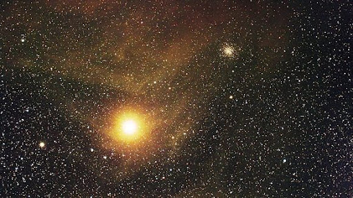
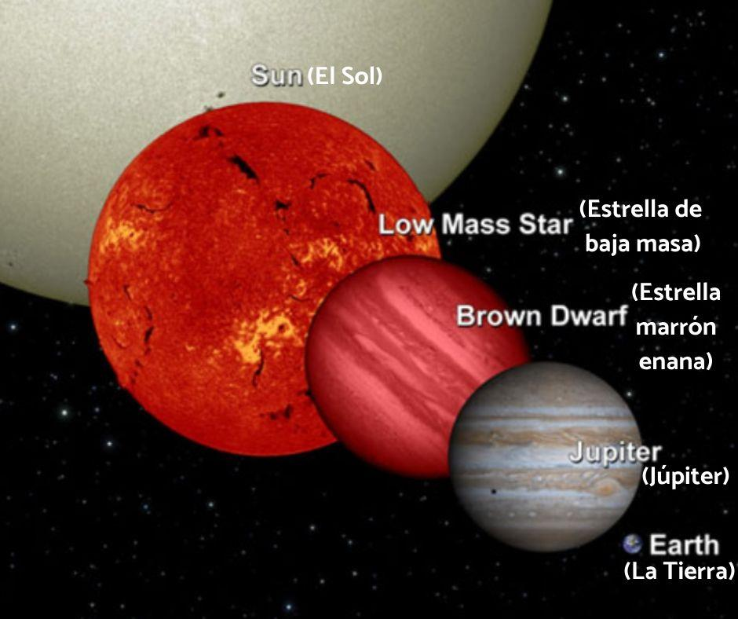

El planeta Tierra y la Luna, al igual que el resto de los planetas del sistema solar y de sus satélites, forman parte del universo. Asimismo, también lo integran los asteroides, los cometas, las estrellas y los exoplanetas (aquellos que están fuera del sistema solar). Además, los agujeros negros, la Via Láctea y los miles de millones de galaxias “y todas las demás cosas que los astrónomos ni siquiera pueden observar son parte del universo”.
Las galaxias están formadas por miles de millones de estrellas. Algunas galaxias están tan lejos que la luz que recibimos de ellas fue emitida hace miles de millones de años. Para entender cómo están acomodadas las galaxias en el Universo, hay que imaginarse una esponja: así como en una esponja hay zonas con más material que otras, en el Universo hay regiones donde hay más galaxias; los huecos representan zonas en donde no hay galaxias. Esta esponja, además, tendría que ser dinámica porque el universo no ha dejado de expandirse desde que ocurrió la gran explosión.
Galaxias en espiral parecen a gigantescas molinetes. Los brazos del molinillo están compuestos de estrellas y un montón de gas y polvo. El gas y el polvo son algunos de los ingredientes principales necesarios para formar nuevas estrellas. Las estrellas jóvenes queman mucho más caliente que las estrellas más viejas, así que las galaxias espirales son a menudo algunas de las más brillantes en el universo. Alrededor del 60% de las galaxias cercanas son espirales. Nuestra galaxia, la Vía Láctea, es un muy buen ejemplo de una.
Galaxias elípticas tienen forma de círculos estirados o elipses. Algunas galaxias elípticas están más estiradas que otras. Uno puede parecer casi perfectamente circular. Otro podría parecer largo y plano. Las galaxias elípticas contienen principalmente estrellas más viejas. Esto significa que a menudo no son tan brillantes como las galaxias espirales. También tienen muy poco polvo y gas. Las galaxias elípticas son las galaxias más grandes y más comunes observadas. Constituyen alrededor del 20% de todas las galaxias cercanas.
Galaxias irregulares son sólo eso: irregular. No tienen ni una sola forma común. Las galaxias irregulares están entre las galaxias más pequeñas que los científicos han observado. Sin embargo, también pueden ser muy brillantes. Al igual que las galaxias espirales, las galaxias irregulares suelen estar llenas de gas, polvo y muchas estrellas jóvenes brillantes. Alrededor del 20% de las galaxias cercanas son galaxias irregulares.
Quásares son áreas compactas en el centro de una galaxia. Ellos emiten enormes cantidades de energía. Los quásares son en realidad algunos de los objetos más brillantes del universo. No hay cuásares cerca de nuestra Vía Láctea.
Las estrellas se forman dentro de nubes estelares a las que se conoce como nebulosas. Las estrellas nacen, pero también mueren: una vez que agotan su combustible nuclear sufren una “muerte” generalmente convulsiva que las transforma, dependiendo de su masa, en otro objeto celeste. Uno de ellos, tal vez el más intrigante, es el hoyo negro.
Las estrellas son motores de energía cósmica que producen calor, luz, rayos ultravioleta, rayos X y otras formas de radiación. Están compuestas casi en su totalidad de gas y plasma, un estado de supercalentamiento de la materia compuesta de partículas subatómicas. Aunque la estrella más conocida, el Sol, existe en solitario, tres de cada cuatro estrellas existen como parte de un sistema binario compuesto por dos estrellas orbitando mutuamente. Nadie sabe cuántas estrellas existen, pero podrían alcanzar un número extraordinario. Nuestro universo podría albergar más de 100 000 millones de galaxias, y cada una de ellas podría tener más de 100 000 millones de estrellas.
Se consideran estrellas hipergigantes las que cuentan con hasta 100 M (la masa de nuestro Sol), aproximándose al límite teórico máximo de 120 M. Las estrellas supergigantes, en cambio, tienen una masa de entre 10 y 50 M, y dimensiones de hasta 1000 veces el de nuestro Sol. Las estrellas gigantes acostumbran a tener un radio de entre 10 y 100 veces el radio solar. Las estrellas subgigantes son las que han fusionado todo el hidrógeno de sus núcleos. Son más brillantes que las enanas de la secuencia principal, pero menos que las gigantes. Las estrellas enanas forman parte de la secuencia principal, que engloba la mayor parte de las estrellas del universo. Nuestro Sol es una enana amarilla. Las estrellas subenanas tienen una luminosidad entre 1,5 y 2 magnitudes por debajo de las de la secuencia principal pero con el mismo tipo espectral. Las estrellas enanas blancas, por último, son el remanente de estrellas que se han quedado sin combustible nuclear. Son las más numerosas del universo junto a las enanas rojas, y se calcula que el 97% de las estrellas conocidas pasarán por esta fase. En la imagen de aquí abajo puedes observar la comparación de tamaños entre algunos de los tipos de estrellas y algunos planetas muy conocidos, como la Tierra y Júpiter.
Los cometas son cuerpos celestes que orbitan dentro del Sistema Solar, donde la Tierra también está ubicada. Estos astros son restos del momento de la creación de nuestro sistema hace aproximadamente 4.600 millones de años, cuando la nebulosa solar colapsó dando lugar a una gran cantidad de protoestrellas. Están formados por un núcleo compuesto de hielo seco, agua, roca, y otras sustancias como amoniaco, metano y algún metal que, al estar a muy bajas temperaturas, permanecen congelados. A medida que su órbita los acerca al Sol y la temperatura ambiental sube, el hielo del núcleo se convierte en gas y desarrollan una atmósfera llamada coma o cabellera, que se agranda progresivamente y, debido a su movimiento y al viento solar, se proyecta hacia atrás formando una cola. Este movimiento interestelar no ocurre de forma silenciosa: en 2014 los científicos descubrieron a través de la sonda Rosetta que los cometas emiten sonidos que son, en realidad, oscilaciones en el campo magnético a su alrededor. Estos se producen a unos 40-50 milihercios, y por tanto no son detectables por el oído humano.